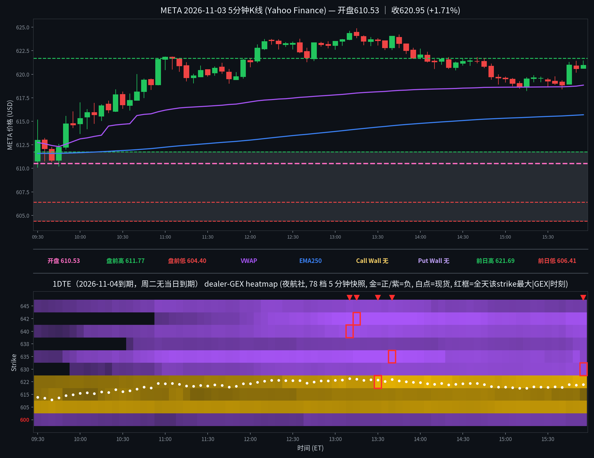

META 日内报告
2026年11月3日 · 周二 · 日内报告
早盘分析
（Junk-man 早盘简报未抓取到，留空待补）
（待补充 Junk-man 当日 #junkman-analysis 原文）
5 分钟 K 线 × 1DTE heatmap
1DTE（2026-11-04到期，周二无当日到期），夜航社 78 档 5 分钟快照；白点为每档现货位置

heatmap解读（1DTE（2026-11-04到期），夜航社 78 档 5 分钟快照）
GEX 地形图（1DTE（2026-11-04到期），夜航社 78 档 5 分钟快照）：金色=正 gamma 区（做市商对冲减速带/墙），紫色=负 gamma 区（加速带）。白点为每档现货位置。注意：1DTE 节点量级极小（全天最大 |GEX| 仅 6.9M，总 gamma 绝对值 ≤19.4M），与 0DTE 日（动辄数十 M）不可同量级比较；结构读数须打折。另注：美东已转 EST，heatmap 窗口按 14:30Z–21:05Z 取全（09:30–15:55 ET）。
- 金色带（收盘帧 15:55）：622.5(+4.3M)/625(+3.2M)/605(+2.9M)/615(+0.8M)；现价 620.90 上方最近正节点为 622.5，下方为 615
- 紫色带（收盘帧 15:55）：630–642.5 连片负带（630 -4.4M／632.5 -4.1M／635 -3.6M／637.5 -3.5M／640 -4.8M／642.5 -5.8M），距收盘价约 9–22 点；现价下方无显著负簇
- 全天最大节点：642.5(-6.9M@13:15)、635(-6.7M@13:40)、640(-5.3M@13:10)、622.5(+5.0M@13:30)、630(-4.4M@15:55)
- 结构特点：总 gamma 开盘 +2.6M → 10:30 -1.4M（翻负）→ 12:30 -18.2M → 13:30 -18.3M → 15:30 -12.4M → 15:55 -18.6M；价格在总 gamma 转负后反而一路走高（开盘 610.53 → 午间 623 一带 → 收 620.95），属负 gamma 环境下的上行、而非负 gamma 压制；收盘在 VWAP(618.84)上方、EMA250(615.69)上方
全天最大节点 TOP5
一、642.5（上方远处负区，全天最大 |GEX|）：全天变化——09:30 帧无该 strike（帧内仅 20 格）→ 11:00 -1.0M → 12:00 -3.0M → 13:00 -6.2M → 13:15 -6.9M 峰值 → 13:40 -6.9M → 15:00 -5.2M → 15:55 -5.8M；影响时段——午后价格在 623–624.84 高位区磨时负值最深；影响方式——远处背景负区：峰值时现货 624.05、距其约 18.5 点，价格全天最高仅 624.84、从未触及 642.5，负值未兑现为任何方向的加速，只作上方负 gamma 背景。
二、635（上方负区，全天持续加深）：全天变化——09:30 -0.7M → 10:00 -2.8M → 11:00 -5.4M → 12:00 -5.7M → 13:00 -5.9M → 13:40 -6.7M 峰值 → 14:00 -6.1M → 15:00 -4.1M → 15:55 -3.6M；影响时段——上午价格上行途中（10:00–13:40）负值一路加深；影响方式——未触及的加速带：峰值时现货 623.85、距其约 11 点，价格午后最高 624.84 后回落、始终未进入 635 一带，负值随价格回落同步衰减，未形成突破加速。
三、640（上方负区，午后小幅回深）：全天变化——09:30 -0.5M → 10:00 -0.9M → 11:00 -2.9M → 12:00 -3.4M → 13:00 -4.7M → 13:10 -5.3M 峰值 → 14:00 -4.6M → 15:00 -3.8M → 15:55 -4.8M；影响时段——13:10 前后价格见全天高 624.84 区域；影响方式——同为远处负区：峰值时现货 624.44、距其约 15.5 点，价格未近 640，15:55 的 -4.8M 为收盘帧次深值、但现货 620.90 距其约 19 点，不作收盘结构读数。
四、622.5（全天唯一显著近价正节点，午后被价格穿越后钉住）：全天变化——09:30 +1.1M → 10:00 +1.2M → 11:00 +1.4M → 12:00 +1.8M → 13:00 +3.4M → 13:30 +5.0M 峰值 → 14:00 +4.4M → 15:00 +3.5M → 15:55 +4.3M；影响时段——13:30 前后价格在 623.50 一带、刚站上 622.5；影响方式——站上后未回踩：价格 13:30 收 623.50 站上 622.5，此后 14:00–15:55 虽回落至 618.69–621.42、但 15:55 收 620.95 仍在其下方约 1.5 点——严格说收盘在 622.5 下方，节点增厚未能把价格托回其上；622.5 是收盘帧最大正节点（+4.3M），为明日最近的上方正参考。
五、630（上方近处负簇，收盘帧峰值）：全天变化——10:00 -0.5M → 11:00 -3.0M → 12:00 -2.7M → 13:00 -3.7M → 13:40 -4.1M → 15:00 -3.9M → 15:55 -4.4M 峰值；影响时段——全天价格从未触及 630（最高 624.84）；影响方式——收盘帧上方负簇的一员：与 632.5(-4.1M)/635(-3.6M)/637.5(-3.5M)/640(-4.8M)/642.5(-5.8M) 连成 630–642.5 负带，距收盘价 620.95 约 9–22 点；若明日价格上行进入该带为加速区、而非墙——但 1DTE 节点量级仅个位数 M，强度远弱于 0DTE 日，读数须打折。
亮度口径：p99 截断做上限；红框 = 全天该 strike 最大 |GEX| 时刻；TOP5 排名以全天最大 |GEX| 为准（build_meta_day.py 输出一致）。
资金流（1DTE到期2026-11-04，9笔；premium≥$20万｜size≥50｜DTE≤1｜side=at_ask/at_bid；mid单列、绝不计入主动买卖）
| 时间 | Strike | C/P | DTE | Fill | Bid/Ask | Side | Size | Prem | Vol | OI |
|---|---|---|---|---|---|---|---|---|---|---|
| 09:56:43 | 570.0 | CALL | 1 | $46.00 | 42.35 / 46.00 | ASK | 92 | $0.423M | 96 | 107 |
| 11:11:39 | 660.0 | PUT | 1 | $39.00 | 39.00 / 40.90 | BID | 100 | $0.390M | 102 | 48 |
| 11:22:52 | 660.0 | PUT | 1 | $41.00 | 37.90 / 41.00 | ASK | 100 | $0.410M | 202 | 48 |
| 11:39:41 | 620.0 | CALL | 1 | $8.30 | 8.30 / 8.45 | BID | 400 | $0.332M | 8686 | 931 |
| 11:46:28 | 620.0 | CALL | 1 | $7.85 | 7.75 / 7.85 | ASK | 400 | $0.314M | 9139 | 931 |
| 12:13:52 | 660.0 | PUT | 1 | $37.30 | 37.30 / 41.30 | BID | 100 | $0.373M | 302 | 48 |
| 13:16:37 | 660.0 | PUT | 1 | $35.90 | 35.90 / 38.20 | BID | 100 | $0.359M | 403 | 48 |
| 13:24:18 | 660.0 | PUT | 1 | $37.00 | 35.45 / 37.00 | ASK | 100 | $0.370M | 503 | 48 |
| 13:31:41 | 625.0 | CALL | 1 | $6.90 | 6.90 / 6.95 | BID | 452 | $0.312M | 8424 | 919 |
偏多 5 笔 $1,859k（call ask 2 笔 $737k＋put bid 3 笔 $1,122k）vs 偏空 4 笔 $1,424k（put ask 2 笔 $780k＋call bid 2 笔 $644k），净偏多约 $435k；mid 单 0 笔。注意：同一 660 put 在 11:11 bid／11:22 ask／12:13 bid／13:16 bid／13:24 ask 反复出现，买卖双向均有、偏多略占优，不宜读成单边押注；最大单笔为 09:56 的 570 深 ITM call ask $423k，strike 远离现货、方向读数弱。30 分钟桶内无 ≥$600k 簇。
分析总结
价格行为 × 1DTE GEX 结构复盘
① 开盘 610.53（官方；5m 首根开 610.76），较昨收 606.54 高开 +0.66%（非事件日）；全天 610.10–624.84，收 620.95（+2.38% vs 昨收；收开差 +10.42）。
② 白点轨迹：首根 09:30 宽幅 610.10–615.14（收 613.00，站上盘前高 611.77）→ 10:00 收 615.31 → 11:00 收 621.80（短暂站上前日高 621.69）→ 午间 621–623 窄磨 → 13:00 收 623.50、盘中见全天高 624.84 → 午后回落、15:00 收 619.49、15:30 收 619.25 → 终根 15:55 收 620.95（收在盘前高 611.77、前日低 616.80 之上，前日高 621.69 盘中触及但收盘未站上）。
③ 结构：总 gamma 开盘 +2.6M → 10:30 翻负 → 12:30 -18.2M → 15:55 -18.6M；价格在总 gamma 转负后不跌反涨，全天最大节点仅 6.9M（1DTE 薄结构），上方 630–642.5 负带全天未被触及——负 gamma 未兑现为加速，622.5 正节点（+5.0M@13:30）被站上后价格未回踩确认、收盘 620.95 反落其下方。收盘在 VWAP 上方（VWAP 618.84）/ EMA250 上方（EMA250 615.69）。
④ Junk-man 简报已核实缺席（见 junkman 字段）：当日分隔线下仅有一条 07:18 MDT 综合批次消息，无独立 META 简报，墙位记 null；收盘算法关键位见明日预测（算法值，非简报墙）。
⑤ 资金流：偏多 5 笔 $1,859k vs 偏空 4 笔 $1,424k，净偏多约 $435k；660 put 买卖双向反复出现、非单边押注（见资金流 verdict）。
K线=Yahoo Finance 5分钟；heatmap=夜航社 dealer-GEX 5分钟快照；heatmap亮度=平方根连续渐变（p99裁剪）。
收盘后的静态快照；页面不在打开时更新行情。